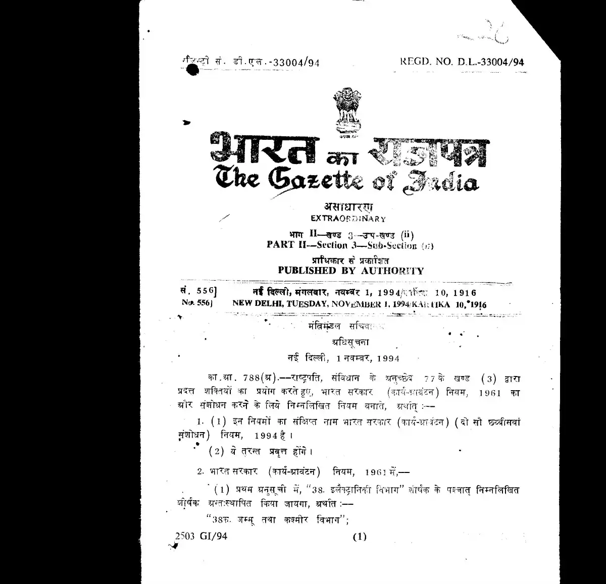
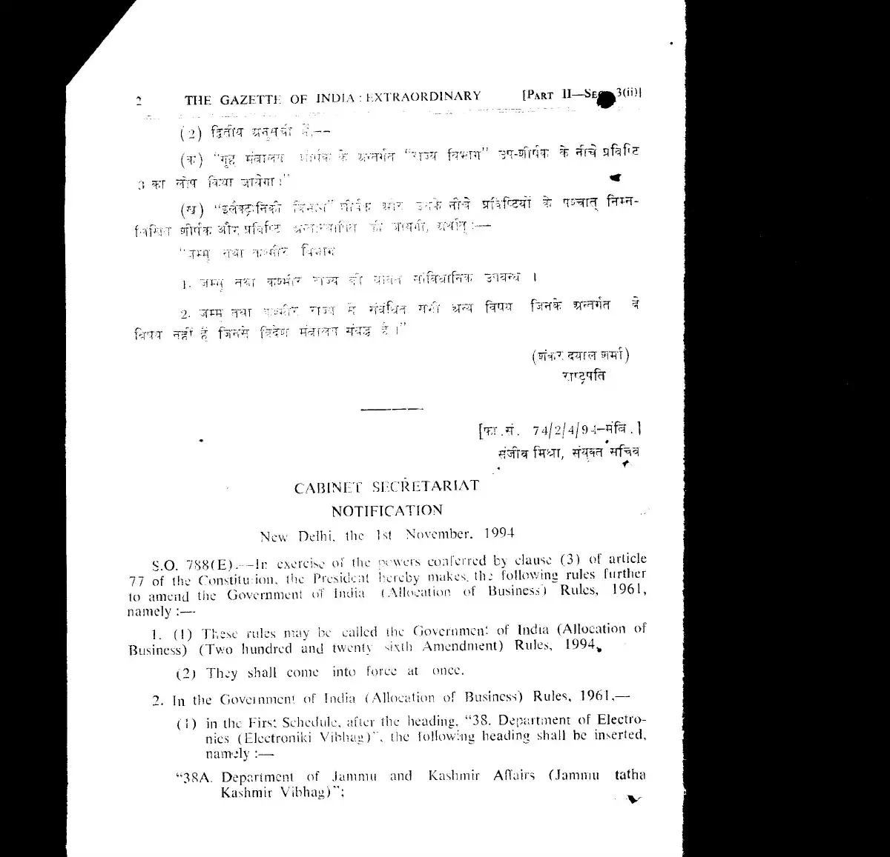
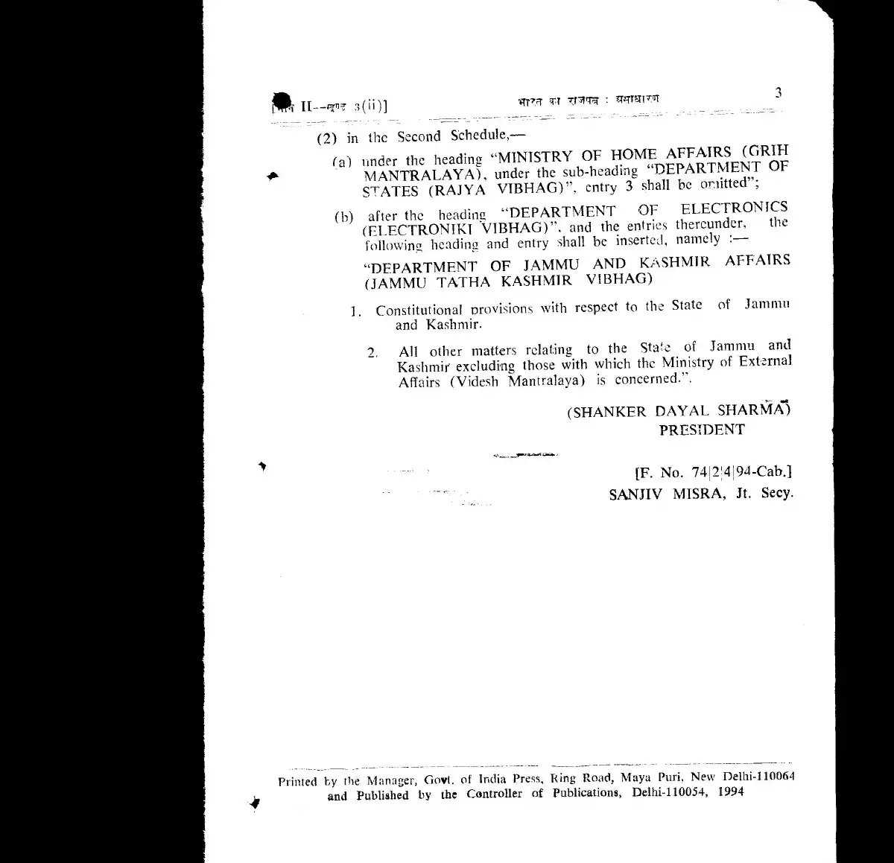

Amendment #226 (S.O. 788(E), 1994)
3 changes: 1 to the First Schedule, 2 to the Second Schedule. 3 applied
What it did to the ministries
- bornDepartment of Jammu and Kashmir Affairs is created (2 subjects) change 1, 3 · histories: Jammu and Kashmir Affairs
The order, page by page
Page 1 of 3

Page 2 of 3

1after Schedule 1 › Department of Electronics
- 38A. Department of Jammu and Kashmir Affairs
applied at schedule 1 › department 38A in the Rules after #226
Page 3 of 3

23Schedule 2 › MINISTRY OF HOME AFFAIRS › DEPARTMENT OF STATES › entry 3
applied at schedule 2 › ministry MINISTRY OF HOME AFFAIRS › department B › group_heading I › entry 3 in the Rules after #226
after Schedule 2 › DEPARTMENT OF ELECTRONICS
- DEPARTMENT OF JAMMU AND KASHMIR AFFAIRS
- 1. Constitutional provisions with respect to the State of Jammu and Kashmir.
- 2. All other matters relating to the State of Jammu and Kashmir excluding those with which the Ministry of External Affairs (Videsh Mantralaya) is concerned.
applied at schedule 2 › department DEPARTMENT OF JAMMU AND KASHMIR AFFAIRS in the Rules after #226
How this document was read
From the Government of India (Allocation of Business) Rules, 1961 and their amendments, as published by the Cabinet Secretariat (cabsec.gov.in), read by orgpedia. The readings of the older scanned gazettes have known gaps.